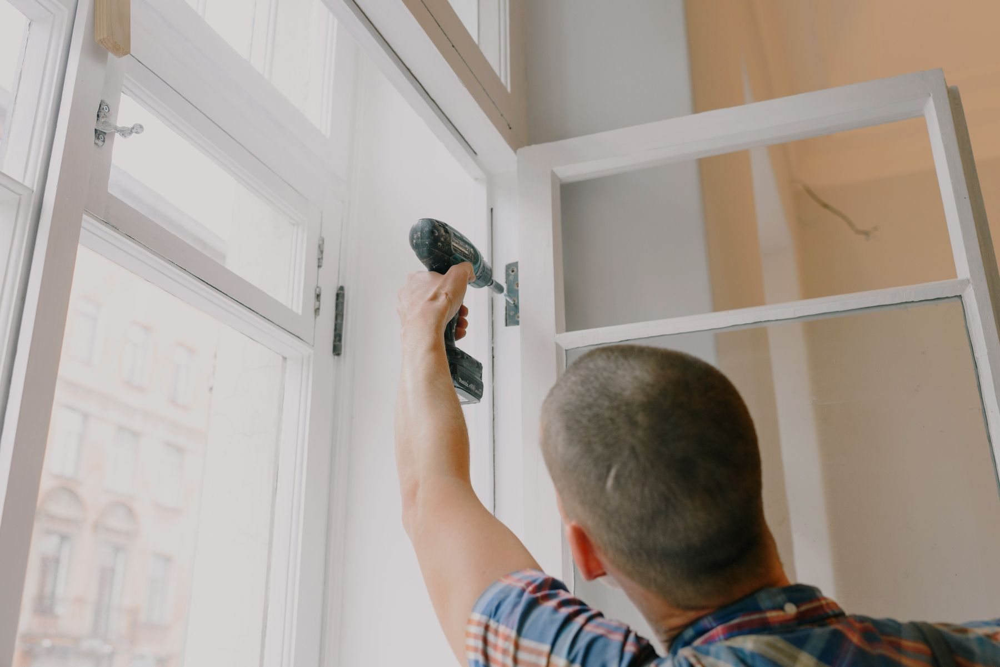
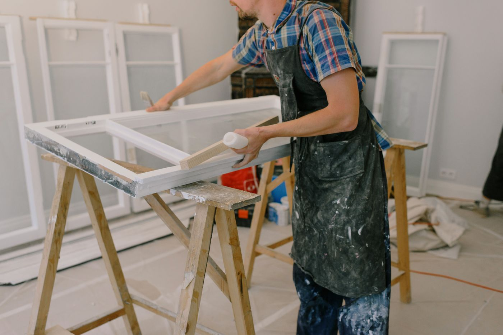
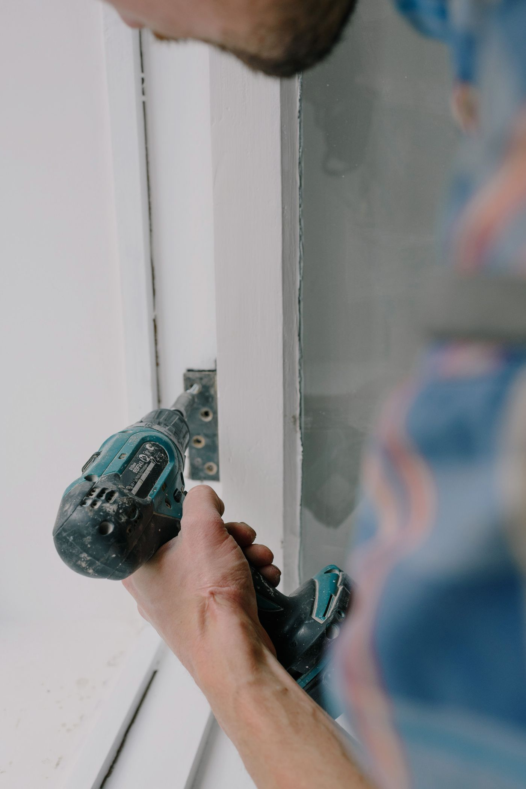
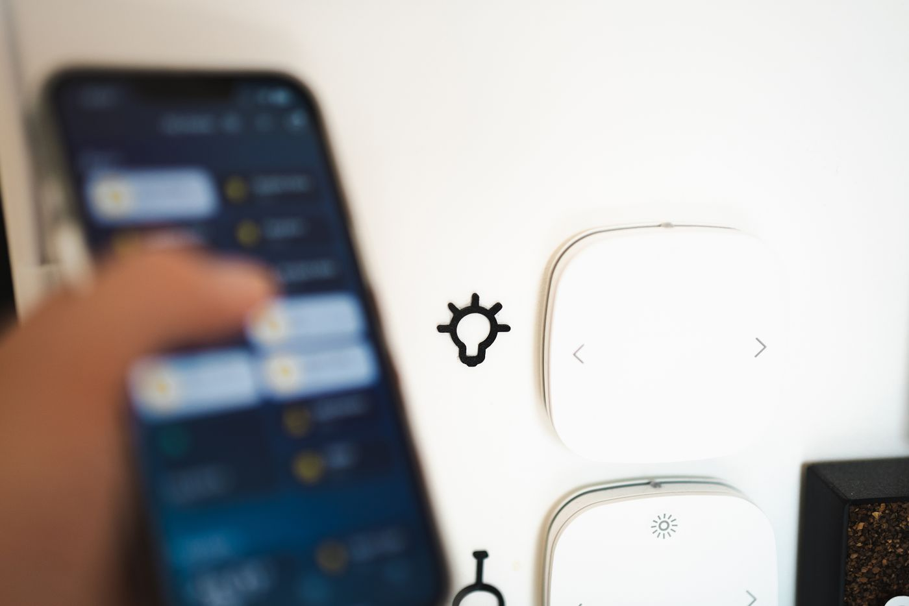
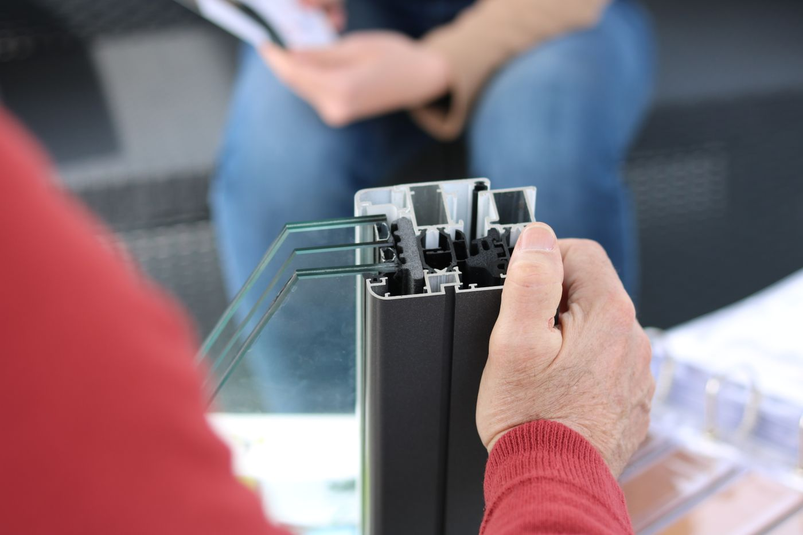
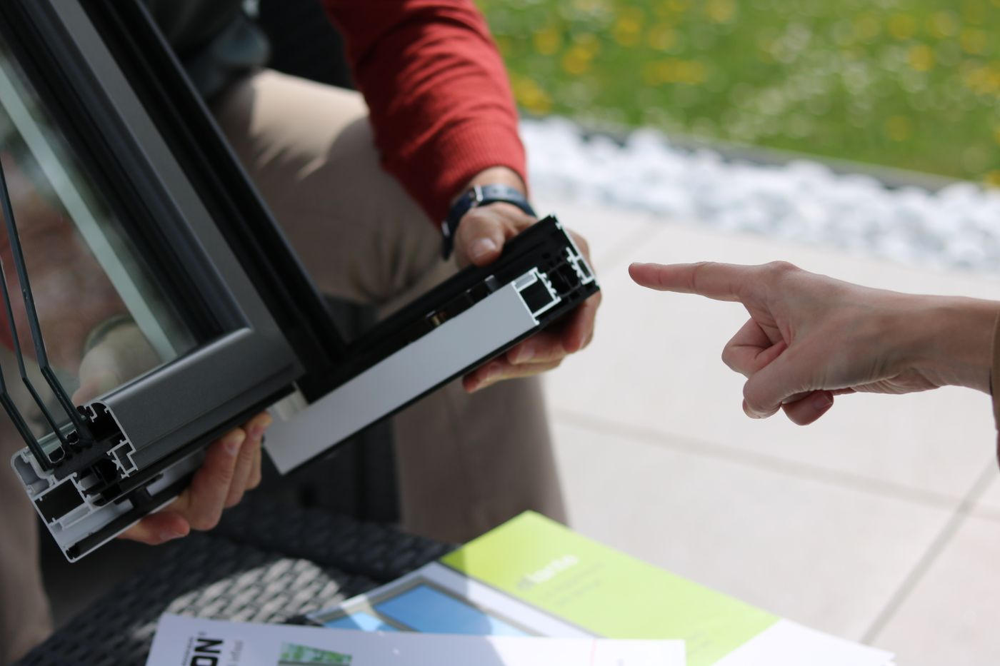

Troca e regulagem de roldanas
Esquadrias de correr que emperram, saem do trilho ou fazem ruído recuperadas sem precisar trocar o conjunto inteiro.
Conserto de esquadrias e motorização residencial em Porto Alegre e Região Metropolitana. Da roldana emperrada ao comando por voz, resolvido pela mesma equipe, na mesma visita.

A maioria dos problemas de janela é mecânico, roldana gasta, trilho empenado, vedação que deixou entrar vento e chuva, e a maioria das automações de casa é vendida por quem nunca abriu uma esquadria por dentro. A Trilho Certo nasceu para fechar essa lacuna, quem conserta é quem automatiza, sem terceirizar metade do serviço.
O trabalho começa sempre pelo diagnóstico físico da esquadria, alumínio, PVC ou madeira, porque uma motorização bem instalada depende do estado real do mecanismo. Só depois entra a parte elétrica e de programação, controle por botão, aplicativo ou comando de voz, testada na hora, na frente de quem contratou.

Seis frentes de trabalho, todas resolvidas pela mesma equipe, sem precisar contratar um serralheiro e um instalador de automação separadamente.
Esquadrias de correr que emperram, saem do trilho ou fazem ruído recuperadas sem precisar trocar o conjunto inteiro.
Escovas gastas, trilhos empenados e infiltração por vento e chuva corrigidos com a peça correta para cada perfil.
Motor silencioso instalado na esquadria existente, com abertura e fechamento por botão, controle remoto ou aplicativo.
Alexa, Google Home e Apple HomeKit configurados junto com a instalação, incluindo rotinas como fechar à noite ou abrir com o sol da manhã.
Quando a automação da esquadria abre espaço para motorizar também o sombreamento do mesmo ambiente.
Revisão periódica de esquadrias e motores para evitar que um problema pequeno de hoje vire um conserto grande depois.

Diagnóstico da causa real, não só do sintoma, antes de trocar qualquer peça.

Configuração testada na hora, com o cliente acompanhando pelo próprio celular.
O mesmo processo tanto para um conserto simples quanto para uma automação completa.
Visita técnica, medição da esquadria e identificação da causa real do problema, não só do efeito.
Valor fechado por escrito antes de qualquer serviço começar, sem surpresa na hora de pagar.
Conserto ou instalação da automação, com teste de funcionamento acompanhado na própria visita.
12 meses de garantia e suporte direto pelo WhatsApp caso algo precise de ajuste depois.

Visita técnica agendada por WhatsApp, com deslocamento cobrindo a capital e os principais municípios do entorno.

As dúvidas mais comuns de quem está pensando em consertar ou automatizar uma esquadria.
Envie uma mensagem pelo WhatsApp com o problema da sua esquadria, ou com a ideia de automação que você quer, e a visita técnica é agendada em até 24h.
Porto Alegre, RS e Região Metropolitana